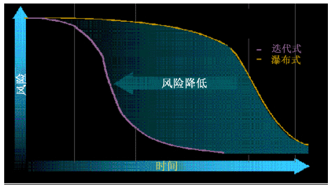

| 概念：迭代地演示价值 |
 |
|
讨论此原则下有几个需要。第一个是必须交付递增值以启用早期和持续的反馈。可通过将项目分成一组迭代来完成此需要。在每个迭代中，执行应用程序的一些需求、设计、实施和测试，从而生成更接近最终解决方案的可交付件。它允许我们对最终用户和其他项目干系人演示应用程序，或者使这些人员可直接使用应用程序，从而提供关于评价的快速反馈。前进的方向正确吗？项目干系人对我们目前为止的工作满意吗？我们需要更改目前为止实施的功能吗？最后，还需要实施哪些附加功能来增加业务价值？ 通过满意地回答这些问题，我们将更有可能在项目干系人之间建立信任，而开发的系统将会处理这些项目干系人的需要。 因此就不会过度设计方法，或者添加对最终用户无用的功能。 第二个需要是利用演示，并向调整计划提供反馈。不需要依靠评估规范（诸如，需求规范、设计模型或计划），我们只需要评估至今为止开发的代码的工作情况。这说明我们必须使用测试结果并向项目干系人演示工作代码，来确定工作情况。这样可对进度、团队的进展速度，以及是否需要更正课程有一个更好的了解，从而成功完成项目。然后，可使用此信息来更新项目的总体计划，并为下一个迭代制定详细计划。 第三个需要是接受并管理变更。对于需求、设计、实施和测试来说，现在的应用程序过于复杂，无法在第一次就完全符合需求。相反，最有效的应用程序开发方法是接受更改的必然性。通过及时和持续的反馈，了解该如何改进应用程序，而迭代方法提供了以增量方式实施这些更改的机会。所有这些更改都要求准备好流程和工具才能进行管理，以便可以有效管理更改而不会阻碍创造力。 此原则下的第四个需要是在生命周期早期排除主要风险，如下图所示。我们必须尽早处理主要的技术、业务和编程风险，而不是将风险的解决推迟到项目结束。可通过不断评估正面临的风险，并处理下一个迭代中的首要风险来完成此需要。在成功的项目中，早期迭代包括项目干系人接受远景和高级需求，其中包括体系结构设计、实施和测试以减轻技术风险。保留决定要使用哪些可重用资产或商业（COTS）软件的所需信息也是很重要的。  瀑布式和迭代开发的风险降低概要文件. 迭代开发的主要目标是及早降低风险。可通过分析、划分优先级和处理每个迭代中的首要风险来完成此目标（请参阅：支持材料：迭代开发）。关于有助于组织迭代的开发生命周期的其他指导信息在概念：迭代和概念：阶段中提供。 |
© Copyright IBM Corp. 1987, 2006. All Rights Reserved. |